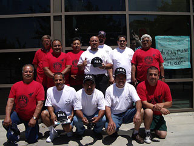

Submitted on Sat, 08/26/2006 - 3:03am
This year, the General Assembly of the Industrial Workers of the World will be hosted by the San Francisco Bay Area General Membership Branch at the Humanist Hall in Oakland, California, at 390 27th Street. On Friday Sept. 1st, the day before the Assembly is called to order, the IWW will be recieving Fellow Workers from throughout the Union at its headquarters in the Grassroots House in Berkeley at 2022 Blake St., just west of Shattuck.
At 6:30 pm on Friday the IWW is conducting a rally and march, in Solidarity with IWW-Shattuck Cinema Workers, starting from the theater (located near the Berkeley Downtown BART station) and proceeding at a mischieviously Wobbly trajectory. Songs will be sung, the truth shall be spoken, and the power of Working Class Solidarity will once again rise from the rank and file of the world's toughest and most directly democratic radical labor union and its allies.
Submitted on Sat, 08/26/2006 - 2:08am
Just a quick report on our Informational picket at Starbucks in Edinburgh yesterday (Saturday 19th).
 We (4 wobs, two supporters) chose our ususal target - the High Street branch on the top of the Royal Mile.
We (4 wobs, two supporters) chose our ususal target - the High Street branch on the top of the Royal Mile.
The area was teeming with people as it's mid-Festival.
We arrived at 11.00am and went in to speak with Baristas first, in order to explain what we were doing and to offer solidarity. Some Baristas were positive, some negative "We don't need a union". Whilst a manager was informing us that we weren't allowed to do this and none of his staff were interested anyway, a Barista came up and asked for a bundle of leaflets for his co-workers, despite veiled threats from the manager!
Submitted on Sat, 08/26/2006 - 2:00am
UNION CO-FOUNDER IN U.S. FIRED AFTER CAFÉ PICKET. STARBUCKS CONTINUES CAMPAIGN AGAINST UNION.
 Starbucks continues a campaign of union busting in the United States while the IWW Starbucks Union continues to organize. Coffee giant Starbucks is accused of unlawfully terminating the Union co-founder, Daniel Gross.
Starbucks continues a campaign of union busting in the United States while the IWW Starbucks Union continues to organize. Coffee giant Starbucks is accused of unlawfully terminating the Union co-founder, Daniel Gross.
New Zealand union Unite who won a landmark fast food agreement earlier this year with Restaurant Brands Ltd, have expressed solidarity with Daniel Gross and three other union barristas terminated in the last few months on what they call “exaggerated charges designed to bust a sister union”. Gross was fired for “intimidation” after a protest outside Starbucks protesting the earlier firings
Submitted on Wed, 08/23/2006 - 8:59pm
Disclaimer - The following article is reposted here because it is an issue with some relevance to the IWW. The views of the author do not necessarily agree with those of the IWW and vice versa.
By Jack Heyman - Counterpunch, August 22 , 2006
 Spying on grannies in Sacramento who were planning to “mark Mother’s Day urging the Governor and Legislature to support bringing California National Guardsmen home from Iraq by Labor Day”; doing undercover surveillance at a union rally for health care in San Francisco and prompting police to fire “less-than-lethal” weapons at anti-war protesters and longshore workers in the port of Oakland -- this is the veiled face of the “war on terror” exposed in a just-released American Civil Liberties Union (ACLU) report.
Spying on grannies in Sacramento who were planning to “mark Mother’s Day urging the Governor and Legislature to support bringing California National Guardsmen home from Iraq by Labor Day”; doing undercover surveillance at a union rally for health care in San Francisco and prompting police to fire “less-than-lethal” weapons at anti-war protesters and longshore workers in the port of Oakland -- this is the veiled face of the “war on terror” exposed in a just-released American Civil Liberties Union (ACLU) report.
Submitted on Sat, 08/19/2006 - 1:24am
By Ernesto Nevarez, Port of Aztlan, Portofaztlan@yahoogroups.com - Turning the Tide: Journal of Anti-Racist Action, Research & Education, Volume 19 Number 4, July-August 2006
The City of Los Angeles has issued 9 Franchise Contracts to taxi companies which allow them to work LAX. These companies have permission to use about 3,000 drivers. Most are poor immigrants from a variety of countries, such as Iran, Russia, Congo, Pakistan, etc. The companies have banded together and have invented a non-standard workplace with characteristics that have been institutionalized and accepted as the "standard" and which the workers have fatalistically believed was their reality. That was until the Nick Search Decision!